Variant 1 / Beast branded / English
Beast AI / Watermark
Heavy signal.
Zero noise.
Two watermark formats - Beast branded in landscape and non-Beast branded in portrait, each in English and German.
Variant 1 / Beast branded / Deutsch
Variant 2 / Non-Beast branded / English
Variant 2 / Non-Beast branded / Deutsch
